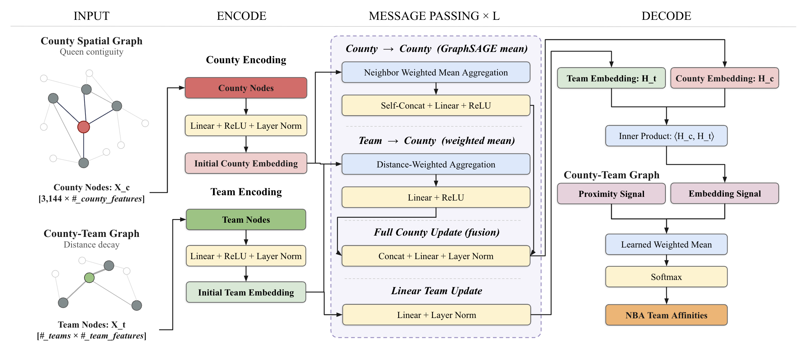
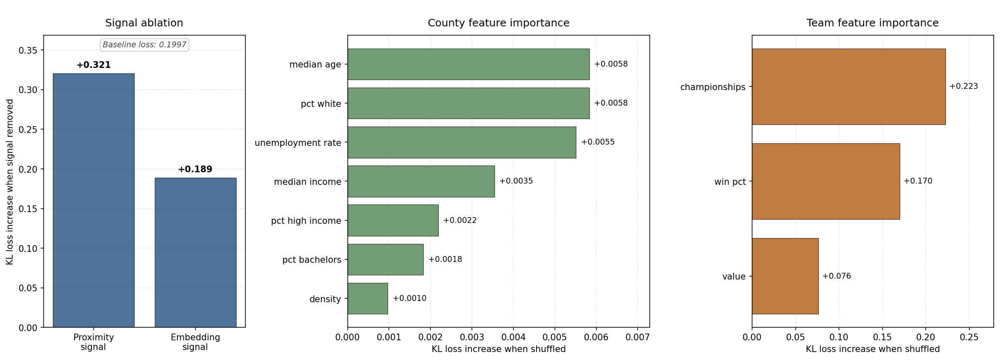
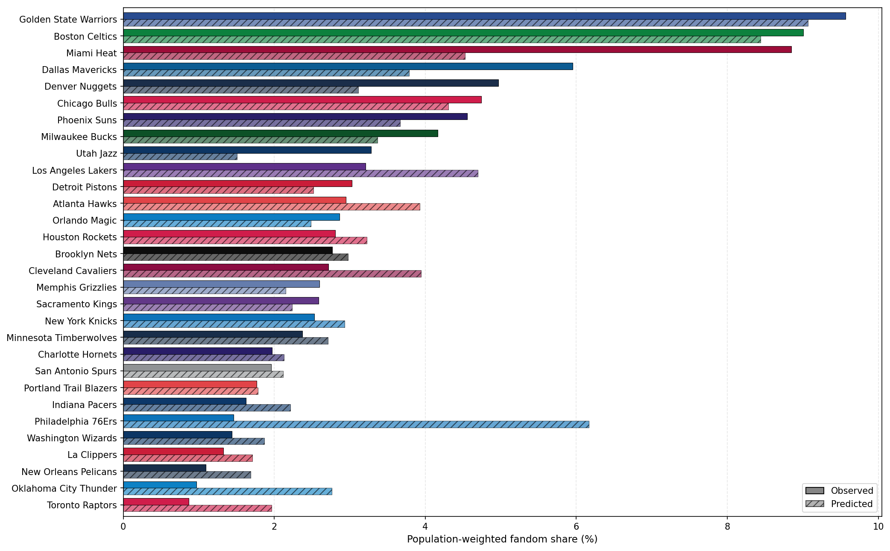

Fandom Estimation Under NBA Expansion
Introduction
The National Basketball Association (NBA) is considering expansion. The league has included 30 teams since 2004, but at the start of the decade, league commissioner Adam Silver hinted that more teams could be added at a future date (Bontemps, 2020). Earlier this year, Silver finally announced that he would begin a more formal expansion process: the league would officially explore the feasibility of adding two teams in Seattle and Las Vegas (NBA Official Release, 2026).
There are many factors to consider for league expansion, including the impact of distributing talent across more teams, the competitiveness of play, and, crucially, where to place new franchises. Past research has assessed the most optimal cities for expansion through a variety of lenses, including estimated team travel costs (Hassanzadeh, Davari, and Goossens, 2025) and predicted attendance and revenue (Rascher and Rascher, 2004). However, central to the consideration of any expansion city is the city’s potential to attract fans: without fans, a new team is doomed to a short lifespan.
Research Questions
Given the current geographic distribution of NBA fans across the US, which counties could new NBA teams in Seattle and Las Vegas expect to attract fans from over time? What share of the population could they potentially capture?
Data
This project requires extensive data preprocessing. Dataset 1 contains US county geometries and statistics from ACS 2024 5-year estimates. Dataset 2 contains US county team affinities, measured as the estimated percentage of residents who support each team. These estimates are based on the popularity of each team name over the past 5 years in Google Trends data. Finally, Dataset 3 contains team success and valuation statistics along with stadium locations.
Dataset 1: US Counties
| Variable | Type | Description |
|---|---|---|
| geoid | Numeric | The unique identifier for the county. |
| county_name | Categorical | The name of the county. |
| state_name | Categorical | The name of the US state. |
| density | Numeric | The population density (population / land area) of the county. |
| median_income | Numeric | The median income (in dollars) of the county. |
| median_age | Numeric | The median age of residents of the county. |
| pct_high_income | Numeric | The % of households making more than $200K. |
| pct_bachelors | Numeric | The % of residents age 25+ with a bachelor’s degree. |
| pct_white | Numeric | The % of residents who are white (non-Hispanic). |
| geometry | String | The county geometry in EPSG:4269. |
Dataset 2: US County Team Affinities
| Variable | Type | Description | Notes |
|---|---|---|---|
| geoid | Numeric | The unique identifier for the county. | |
| dma | Categorical | The US Designated Market Area (DMA) of the county. | DMAs are used to measure television and radio viewings. Each DMA contains several counties, and each county belongs to exactly one DMA. |
| boston_celtics | Numeric | The estimated % of residents who support the Boston Celtics. | Provided at a DMA level. |
| … | Numeric | The estimated % of residents who support TEAM X | 28 other columns, 30 teams in total. Provided at a DMA level. |
| washington_wizards | Numeric | The estimated % of residents who support the Washington Wizards. | Provided at a DMA level. |
Dataset 3: NBA Teams
| Variable | Type | Description |
|---|---|---|
| team | String | The unique team name. |
| value | Numeric | Forbes estimated team values (in dollars). |
| win_pct | Numeric | Team winning % over the past 5 seasons. |
| championships | Numeric | The number of championships in the team’s history. |
| geometry | Categorical | The county geometry in EPSG:4269. |
Methodology
Conceptual Design
Conceptually, we frame NBA team affinities in any US county as the product of three principal factors: 1) geographic proximity to teams, 2) team success and legacy, and 3) the demographics and economics of the county and surrounding counties. Learning how these features predict team affinities then allows us to model how affinities may change upon the introduction of two expansion teams in Seattle and Las Vegas. The technical design which most appropriately captures this framework is an inductive heterogeneous graph neural network (GNN).
Model Architecture
Given that we are interested in analyzing the shift in fandom upon adding two teams, our GNN should learn a general function which inputs the features of US counties and NBA teams and then outputs team affinities. By learning a function rather than representations of specific counties and teams, the model can generalize to unseen counties or teams; this is the kind of inductive GNN framework which was introduced in GraphSAGE (Hamilton, Ying, and Leskovec, 2017).
The graph is heterogeneous in that there are two distinct types of nodes: a county and a team. Each county contains a specific set of demographic and economic features, and each team has valuation and success features. We construct two distinct sets of edges. First, county-county edges are added and symmetrically-normalized between geographically adjacent counties. Separately, county-team edges are assigned so that each county is connected to the K nearest teams; the K edge values for each county are based on a distance decay function.
The GNN can broadly be broken down into three components: 1) encoding, 2) message passing, and 3) decoding. The encoding layer consists of simple MLPs which build initial embeddings for each team and county based solely on the node features. The message passing layer then updates county embeddings based on its proximal counties and closest K NBA teams. These first two components both use 30% dropout to reduce overfitting with a (relatively) small dataset. Finally, the decoding layer calculates the inner product between county embeddings and team embeddings to obtain a similarity score. This score is then weighted alongside a fixed distance decay score. Applying a Softmax function to the weighted scores over each county results in estimated county-level team fandom percentages.

Conceptually, we want to represent counties and teams in some shared latent space. County representations are informed both by geographic neighbors and by proximal NBA teams, while team representations depend only on team features: the resulting inner product between county and team embeddings captures latent similarity. County-team similarity is averaged with fixed county-team proximity — essentially framing fandom as something that is explained partially by pure geography, but also by the interactions between county and team identities.
Loss Function
The construction of the loss function has a few technical details worth mentioning. We start with KL-Divergence, which is a standard metric for computing how a given distribution (predicted team affinities) diverges from a reference distribution (true team affinities). Given that team affinities were acquired at the DMA level, we calculate the loss by averaging county predictions at the DMA level: county-level variation within a DMA doesn’t exist in the observed data, but we don’t want to penalize the model for predicting such variation. We also add a Laplacian regularizer to the loss which penalizes counties for having affinities vastly different from their neighbors; it serves as a smoothing function during training.
Training Framework
The goal of the model is to generalize well to estimating county affinities upon the addition of two new NBA teams. We, therefore, devise a training framework which goes beyond a standard train-validation split and, instead, more closely mirrors the NBA expansion process. To reflect the fact that new NBA teams will have to compete for fans amongst established high-fandom teams, we take the 15 teams with the most fans and include them in every training set. We split up the remaining 15 teams into 5 folds of 3 teams so that each fold contains roughly the same number of total fans. We then perform 5-fold cross validation in which, for each set of model parameters, we hold out each fold of 3 teams and train the model on the other 27 teams. For inference on our two expansion teams, we then select the model parameters which, on average, generalize the best to the unseen teams during cross-validation training.
Inference
We add two new teams in Seattle and Las Vegas and model county affinities under this expansion. For node features, we assign league-average values for recent team success and valuation, and, appropriately, give each team 0 championships.
Results and Discussion
Current teams
The best cross-validated model achieves an evaluation loss just above 0.19 on the full 30-team data. For context, this represents a more than 70% loss reduction from the most basic model of predicting uniform team affinities for each county, showing that our model is picking up meaningful affinity differentiation. Both the proximity signal and embedding signal are critical for predictions. The loss doubles without the embedding signal and increases even more without the proximity signal: geographic proximity, as expected, primarily drives fandom, but county-team features and interactions explain affinities in a way that proximity alone cannot capture.
Permutation importance reveals that team attributes are much more crucial to accurate affinity predictions than county attributes. The number of championships is the most important feature, and, conceptually, this makes sense: where geographic proximity to teams is weak, a team’s legacy will attract fans. Interestingly, county population density is the least important feature. It was hypothesized that large metro areas may have affinity tendencies distinct from those of less dense areas, but perhaps the combination of geographic proximity and other county features already serves as a kind of proxy for a county’s level of urbanization.

Viewing observed vs. predicted national population-weighted team affinity percentages, it is clear that the model generally underpredicts high-affinity teams and overpredicts low-affinity teams: there is some oversmoothing which could be refined in future models. Notably, the Philadelphia 76ers are one of the lower-affinity teams, but are predicted as the third-highest affinity franchise. Visually, these numbers appear to be driven by overpredicted fandom in the Philadelphia metro area, but the county affinities for this specific team warrant future investigation.

Expansion
With average team success and valuation, new teams in Seattle and Las Vegas can each expect to pick up around 2.5% of fans in the US, roughly middle-of-the-pack numbers amongst all NBA teams. Visually, these fans, expectedly, are concentrated in counties surrounding each city: Seattle fandom radiates outward from King county, appropriately cut off into Oregon by Portland Trailblazers fandom, and Las Vegas fandom eats up chunks of the broader Southwest.

Of course, there is a cold start problem which is difficult to replicate in this modeling. We don’t have the fandom data for a new NBA team in year 1; while we are capturing a sense of team affinity changes upon adding new teams, these estimates are time-agnostic. In reality, fan allegiance takes time to build (Funk and James, 2001). Therefore, the estimated fan percentages for these expansion teams are probably more realistic a few years down the line.
Conclusion
The GNN architecture presented here effectively models NBA fandom across the US. This model can be used to estimate national and county-level fan share for expansion teams in Seattle and Las Vegas and reveal that, under average team success and valuation, both teams can expect to attract a high percentage of regional fans and roughly 2.5% of fans nationally.
This model has important limitations. First, it assumes that the percentage of NBA fans is the same across all US counties. In reality, some areas have greater sports culture than others, and the addition of a new sports franchise would certainly create new fans. Additionally, true fandom was estimated using open-source Google Trends data; additional work could consider more advanced methods to estimate real team affinities.
Finally, this work considers only the proposed sites of Seattle and Las Vegas. In theory, this model can be used to estimate fandom change under league expansion with any locations in the US. Running the model for multiple sets of other potential locations may reveal more optimal cities for the league to consider.
References
Bontemps, T. (2020). Adam Silver acknowledges possibility of NBA expansion. [online] ESPN.com. Available at: https://www.espn.co.uk/nba/story/_/id/30576045/adam-silver-acknowledges-possibility-nba-expansion.
Funk, D.C. and James, J. (2001). The Psychological Continuum Model: A Conceptual Framework for Understanding an Individual’s Psychological Connection to Sport. Sport Management Review, 4(2), pp.119-150. doi:https://doi.org/10.1016/S1441-3523(01)70072-1.
Hamilton, W. L., Ying, R. and Leskovec, J. (2017) Inductive representation learning on large graphs. In: Advances in Neural Information Processing Systems 30 (NeurIPS 2017), pp. 1024-1034. Available at: https://arxiv.org/abs/1706.02216.
Hassanzadeh, A., Davari, M. and Goossens, D. (2025). Fairness, Travel, and Market Potential: An Optimization Framework for NBA Expansion. arXiv preprint arXiv:2512.16968. Available at: https://arxiv.org/abs/2512.16968.
NBA Official Release (2026). NBA Board of Governors approves exploration of expansion to Seattle, Las Vegas. [online] NBA. Available at: https://www.nba.com/news/nba-board-of-governors-exploration-seattle-las-vegas-expansion.
Rascher, D. and Rascher, H. (2004). NBA Expansion and Relocation: A Viability Study of Various Cities. Journal of Sport Management, 18(3), pp.274-295. doi:https://doi.org/10.1123/jsm.18.3.274.